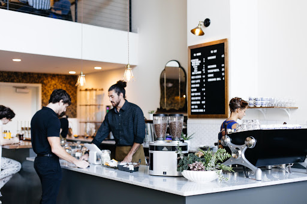

Methodical Coffee - Greenville, SC
Nestled in the heart of downtown Greenville, Methodical Coffee is an essential part of the daily lives of everyone in town. From its ethically sourced single origin beans, to its beautifully designed and crafted space. Methodical is a place to call home.
The attention to detail is what sets this coffee shop apart. Every angle is a good angle, you could photograph anything from anywhere and get a good shot, and thanks to its entire wall of a window, it's always extremely well lit.